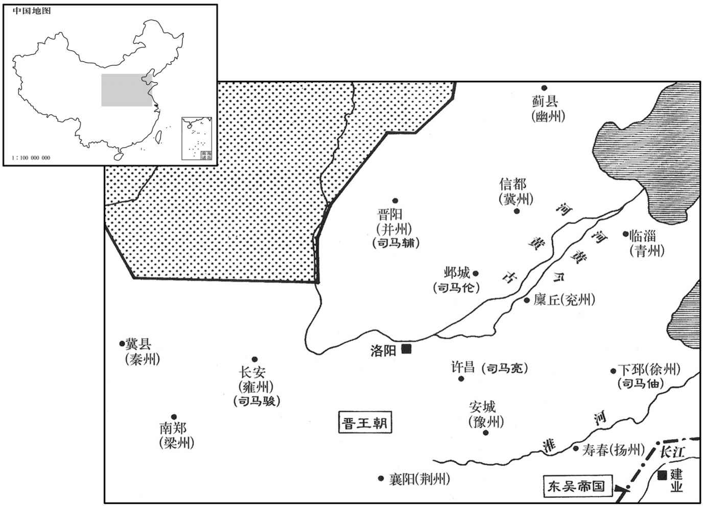

公元277年资治通鉴：本年记事、原文与白话对照
按原书编年位置阅读；追叙和史论不等于本年发生的事件。白话采用所据译本，缺译不以生成译文补齐。
卷80 · 本年记事
公元277年 · 晋世祖武皇帝咸宁三年
三年〔（丁酉、二七七）〕
上传原文的注释括号有异常，字符原样保留；无法可靠划分的段落默认全文显示。
本年事件索引（现代整理）

本年形势与背景参考图
春，正月，丙子朔，日有食之。
春季，正月，丙子朔（初一），出现日食。
立皇子裕为始平王；庚寅，裕卒。
晋朝立皇子司马裕为始平王；庚寅（十五日），司马裕去世。
三月，平虏护军文鸯督凉、秦、雍州诸军讨树机能，破之，诸胡二十万口来降。〔雍，于用翻。降，户江翻。〕
三月，平虏护军文鸯，统领凉州、秦州、雍州各军征讨发树机能，将其打败，胡人各部落共二十万人归降晋。
夏，五月，吴将邵顗、〔顗，鱼岂翻。考异曰：武纪作邵凯，今从羊祜传。〕夏祥帅众七千余人来降。〔夏，户雅翻。帅，读曰率。降，户江翻。〕
夏季，五月，吴将邵、夏祥郭领部众七千余人投降了晋。
秋，七月，中山王睦坐招诱逋亡，贬为丹水县侯。〔诱，音酉。〕
秋季，七月，中山王司马睦因为招募逃亡的罪犯而获罪，被贬为丹水县侯。
有星孛于紫宫。〔孛，蒲内翻。〕
异星出现于紫宫星座。
卫将军杨珧等建议，以为「古者封建诸侯，所以藩卫王室；今诸王公皆在京师，非扞城之义。又，异姓诸将居道，宜参以亲戚。」〔考异曰：职官志以为珧与荀勖以齐王攸有时望，惧太子有后莝，故建此议，使诸王之国。帝初未之察，于是下诏议其制。按勖传有异议，又，时齐王不之国，疑此说非实。今不取。〕帝乃诏诸王各以户邑多少为三等，大国置三军五千人，次国二军三千人，小国一军二千一百人；〔时以平原、汝南、琅邪、扶风、齐为大国，梁、赵、乐安、燕、安平、义阳为次，国，余国为小国。〕诸王为都督者，各徙其国使相近。八月，箯亥，徙扶风王亮为汝南王，出为镇南大将军，都督豫州诸军事；琅邪王伦为赵王督邺城守事；勃海王辅为宏原王，监并州诸军事；以东莞王軎在徐州，徙封琅邪王；〔莞，音官。軎，音胄。〕汝阴王骏在关中，徙封扶风王；又徙太原王颙为河间王；汝南王柬为南阳王。辅，孚之子；颙，孚之孙也。〔颙，鱼容翻。〕其无官者，皆遣就国。诸王〕公恋京师，皆涕泣而去。又封皇子玮为始平王，允为濮阳王，该为新都王，遐为清河王。
卫将军杨珧等人建议，认为：“古时候分封诸侯，是为了藩屏护卫王室；现在诸位王公都在京都，这就失去了保卫的意义。另外，异姓诸将领居住在国家边境地区时，应当让皇室的亲戚参与其中。”晋武帝于是下诏书，诸会根据所食户邑的多少被分为三等，大国设置三军共五千人，次国设二军共三千人，小国设一军一千一百人。诸王中任都督的，各自迁往封国使他们靠近任所。八月，癸亥（二十一日），扶风王司马亮为汝南王，出任镇南大将军，总领豫州军事。迁琅邪王司马伦为赵王，督率邺城的防守事务，迁勃海王司马在徐州，被迁封为琅邪王；汝阴王司马骏在关中，被迁封为扶风王；又迁徒太原王司马为河间王；汝南王司马柬为南阳王。司马辅是司马孚的儿子，司马是司马孚的孙子。诸王中不担任官职的，都把他们遣返回各自的封国。各位王公留恋京都，一个一个都流着眼泪走子。晋朝又封皇子司马玮为始平王，封司马允为濮阳王，司马该为新都王，司马遐为清河王
其异姓之臣有大者，皆封郡公、邵侯。封贾充为鲁郡公。追封王沈为博陵郡公。〔沈，持林翻。〕
异姓大臣中有立过大功的，都被封为郡公或郡侯。贾充被封为重郡公。王沈被追封为博陵郡公。
徙封巨平侯羊祜为南城郡侯，〔时诏以泰山之南武阳、牟、南城、梁父、平阳五县为南城郡。羊祜本泰山南城人也。帝制公侯邑万户以上为大国，五千户以上为次国，不汉五千户为小国。〕祜固辞不受。祜每拜官爵，常多让，至心素着，故特见申于分列之外。〔见申，谓许之辞爵，其志获申也。分列，谓分封邛爵也。〕祜历事二也，〔谓人由祜荐引而进达，不知其所甲来也。〕常曰：「拜官公朝，谢恩私门，吾所不敢也。」〔朝，直遥翻。〕
两版字句有差异，建议核对原文。
钜平侯羊祜被徙封为南城郡侯。羊祜坚持推辞不接受。羊祜每当被授予官职和爵位时，经常避让，他的至诚之心一贯有名，所以他被特别许可不接受分封他的官爵。羊祜经历了两代帝王，他一直掌管关键重要的部门。凡是他参与谋划商议的事情，不管是设置或简省，他都把草稿烧掉，使世人不能知道。由羊祜荐举而作了官的人，自己都不知道是谁推荐的。羊祜常常说：“在公众的朝廷里授予官职，但是却让别人向你个人谢恩，这样的事情是我所不敢作的。”
兖、豫、青、徐、荆、益、梁七州大水。
兖、豫、徐、青、荆、益、梁七州洪水泛滥。
冬，十二月，吴夏口督孙慎入江夏、汝南，〔江夏郡属荆州，汝南郡属豫州，相去甚远。沈约宋志：江夏太守治汝南县，本沙羡土，晋末汝南郡民流寓夏口，因立为汝南，则此江夏郡未有汝南县也，无亦史追书乎！夏，户雅翻。〕略千余家而去。诏遣侍臣诘羊祜不追讨之意，〔诘，去吉翻。〕并欲移荆州。祜曰：「江夏去襄阳八百里，比知贼问，〔比，必寐翻。〕贼已去经日，步军安能追之！劳师以免责，非臣志也。昔魏武帝置都督，类皆与州相近，〔如扬州刺史治寿春，都督扬州诸军事亦治寿春之类。近，其靳翻。〕以兵势好合恶离故也。〔好，呼到翻。恶，乌路翻。〕疆埸之间，一彼一此，慎守而已。〔左传鲁枥公曰：「疆埸之间，慎守其一，而备其不虞。」〕若辄徙州，贼出无常，亦未知州之所宜据也。」
冬季，十二月，吴国夏口督孙慎进犯江夏、汝南，抢动了一千多家然后离去。晋武帝下诏，派身边的大臣责问羊祜，不追击讨伐孙慎是什么意思；晋武帝还打算迁徙荆州。羊祜说：“江夏距离襄阳有八百里，等知道了贼人的消息，贼人已经离开几天了，步兵如何能追上他们？为了使自己免遭责备，就让部队受苦受累，这不是我的愿望。从前，魏武帝设置都督，大抵都州相接近，就是因为喜欢力集中而厌恶兵力分散的缘故。战场上的事情，一彼一此，只是要谨慎防守而已。如果总是迁州，贼人出没无常，也不知把州设在哪里才便于据守。”
是岁，大司马陈骞自扬州入朝〔朝，直遥翻。〕以高平公罢。
这一年，大司马陈骞从杨州入朝廷，以高平公的身份免职。
吴主以会稽张俶多所谮白，〔会，工外翻。俶，昌六翻。〕甚见宠任，累迁司直中郎将，封侯。其父为山阴县卒，〔山阴县属会稽郡。〕知俶不良，上表曰：「若用俶为司直，有罪乞不从坐。」吴主许之。俶表置弹曲二十人，专纠司不法，〔弹，徒干翻。〕于是吏民各以爱憎互相告讦，狱犴盈溢，〔讦，居谒翻。犴，音岸。犴，野太也。野犬所以守，故为狱，又胡地谓犬为犴。〕上下嚣然。俶大为奸利，骄奢暴横，〔横，户孟翻。〕事发，父子皆车裂。
会稽人张经常在吴主面前搬弄口舌，诬陷别人，因而深受吴主宠爱信任，被多次升迁，任司直中郎将，还被封为侯。张的父亲在山阴县当差，知道张不是善良之辈，就上表说：“如果任用张为司直，我请求，他犯了罪不要牵连到我。”吴主答应了他。张上表，设置弹曲二十人，专门负责举报检查种种不法行为。于是官吏百姓各自凭自己的好恶互相告发检举，一时间监狱里人满为患，上上下下，人人惶恐不安。而张却借机为自己在谋私利，骄奢专横。后来张的罪恶暴露出来，父亲儿子都曹车袭的酷刑。
卫瓘遣拓跋沙漠汗归国。〔前年瓘表留沙漠汗，谗间既行，乃遣归。〕自沙漠汗入质，〔人质见七十七卷魏元帝景元二年。质，音致。〕力微可汗诸子在侧者多有宠。及沙漠汗归，诸部大人共谮而杀之。既而力微疾笃，乌桓王库贤亲近用事，受卫瓘赂，欲扰动诸部，乃砺斧于庭，谓诸大人曰：「可汗恨汝曹谗杀太子，〔此时鲜卑君长已有可汗之称。可，今读从刊入声。汗，音寒。〕欲尽收曹长子杀之。」〔长，知两翻。〕诸大人惧，皆散走。力微以忧卒，时年一百。四子悉禄立，〔「悉禄」魏收魏书作「悉鹿」。〕其国遂葨。
卫送拓跋沙漠汗回国。自从沙漠汗入中原作人质，拓跋力微可汗身边的儿子们大多受到力微可汗的宠爱。沙漠汗回国以后，各部落的首领一起诬陷并且杀了他。不久，拓跋力微可汗病倒了，病势沉重。乌桓王库贤由于与力微可汗亲近而当权，他受了卫的随赂，想把各部落搅乱。于是他在朝堂上磨斧 子，对各部落首领说：“可汗恨你们进谗言杀了太子，要把你们的长子都抓起来杀了。”部落首领们害怕，都四散逃跑。力微可汗由于忧虑而去世，死时年龄一百零四岁。他的儿子拓跋悉禄继位。鲜卑国从此就衰落了。
初，幽、并二州皆与鲜卑接，东有务桓，西有力微，多为边患。卫瓘密以计间之，〔间，古苋翻。〕务桓降而力微死。〔考异曰：魏收后魏书：「铁弗刘虎，匈奴去卑之孙，昭成四年死，子务桓立。」按昭成四年，晋成帝咸康七年也，务桓不应与瓘同时，盖二人皆名务桓耳。〕朝廷嘉瓘功，封其弟为亭侯。
当初，幽州并州都和鲜卑接壤，东边有务桓，西边有力微，经常成为边境地区的祸患。后来，卫秘密地用计谋离间鲜卑各部，结果务桓投降晋国而力微死去。朝廷表彰卫的功勋，封卫的弟弟为亭侯。